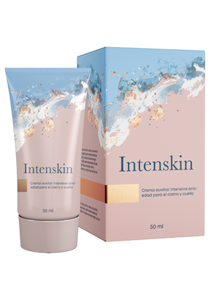

Beauty RoutinesSe lee en 5 min.
LIFTING FACIAL
El tiempo nos cambia. Las arrugas se vuelven más profundas y la piel no es tan firme y radiante como hace unos años. Alguien acepta cambios naturales, pero la mayoría de las mujeres quieren mantenerse jóvenes el mayor tiempo posible. Por lo tanto, se gastan grandes cantidades en viajes regulares a la cosmetóloga, la compra de productos de cuidado costosos y los servicios de los mejores cirujanos plásticos. ¿Y si te digo que hay una manera de detener el proceso de envejecimiento de forma natural? Después de todo, el plástico no hace que las personas sean más jóvenes, las hace diferentes. Te diré cómo alinear la estructura y tensar la piel, quitar las bolsas debajo de los ojos y darle un aspecto fresco, usando solo un producto.

Al principio, quiero mostrarle uno de los comentarios de gratitud. Mi paciente escribió su historia en detalle. No podría transmitir sus palabras mejor.

Cuando me llené de arrugas profundas, me sentí avergonzada al usar un escote y no puedes cubrir tu cara con ropa. Mis cremas dejaron de ayudar, surgió la necesidad de buscar otras formas de resolver el problema.
Mis finanzas no me permiten gastar en un cosmetólogo. En Internet, comencé a buscar diferentes productos antienvejecimiento y técnicas de masaje facial. Probé muchas cosas, especialmente máscaras de mi propia producción. Prácticamente no hubo efecto.
Al final dejé de seguir consejos populares y comencé a buscar una respuesta entre los especialistas. Así que me encontré con un artículo en el que un médico-cosmetólogo habló sobre los daños y la ineficacia de muchas cremas caras. Me interesé y decidí inscribirme para una consulta en línea.
En el proceso, el cosmetólogo me sugirió que probara una nueva crema . Recientemente fue lanzado por una destacada compañía de cosméticos, pero ya se ha vuelto popular entre estrellas, bloggers y especialistas en belleza.

La crema tiene dos grandes ventajas: versatilidad y composición natural. La crema es adecuada para ojos, cara y cuello. La composición incluye una gran cantidad de componentes minerales naturales y oligoelementos que mejoran no solo la condición de la piel, sino que también eliminan las arrugas que envenenaron mi vida. Y lo más importante, comprar una crema que elimina las deficiencias en todas las áreas problemáticas – mucho más rentable.
La composición de la crema ayuda a producir colágeno. Con la edad, esta función se desvanece y la crema ayuda a que la piel se renueve como en los 20 años. Inmediatamente me gustó el efecto. no tapona los poros, sino que los limpia y los estrecha. Después de un par de días, me di cuenta de que mi piel durante el día había dejado de llenarse de grasa y secarse (tengo piel mixta). Como resultado en dos semanas: está hidratada y tonificada.
Todos los días miraba mis arrugas de cerca. No he encontrado ninguna. Y cuando terminé el tratamiento, junto con los paquetes vacíos de crema, tiré 15 años.
Te agradezco que me hayas revelado un secreto tan asequible para la juventud. Ahora solo uso <” .

Siempre me complace recibir cartas de agradecimiento tan cálidas. Puedo dar muchos ejemplos similares. Aquí, por ejemplo, Angelina, tiene 45 años.
Ella vino a la consulta para retrasar su envejecimiento. Le exfolié y le puse una máscara antienvejecimiento. Me aconsejó usar la crema en casa. Después de tres meses, la paciente vino a agradecerme. ¿Qué ha cambiado durante este tiempo? En primer lugar, la capa superior muerta de la epidermis desapareció, se restauró la circulación sanguínea . Esto permitió que la sustancia beneficiosa de la crema penetrara en las capas profundas de la piel. Las bolsas debajo de los ojos disminuyeron, las arrugas faciales profundas, se tensó el óvalo de la cara, se levantaron los párpados . La calidad de la piel se ha vuelto mucho mejor a medida que ha pasado la sequedad y las manchas de la edad.

María a sus 42 años estaba muy insatisfecha con su apariencia. LA resequedad, arrugas profundas, irregularidades e hinchazón. Se planificó una corrección gradual en combinación con biorevitalización, mesonites, botulotoxinas, peelings en una secuencia específica. Para el cuidado en el hogar, aconsejé el . Pero debido a problemas de salud, la paciente no pudo venir y durante tres meses solo usó la crema. Los resultados superaron no solo a ella, sino todas mis expectativas. Las arrugas faciales, la pigmentación y la sequedad se han ido, la estructura de la piel y la tez han mejorado, sin procedimientos cosméticos adicionales.

Después de tal experimento, comencé a aconsejar a muchos de mis pacientes que tenían dificultades con el cuidado de la piel.
Muchas mujeres no tienen la oportunidad de visitar a un cosmetólogo y gastar en corrección con láser, mesoterapia, rellenos, bio revitalización y otros procedimientos. no peor que la atención profesional activa la producción de colágeno propio de la piel, restaurando capa por capa y haciendo que las arrugas sean menos visibles. Y lo más importante, la crema está disponible para todos y puede comprarla no solo del cosmetólogo, sino directamente del fabricante.
Hoy quiero darle un descuento personal en la compra de crema. Puedes pedirlo con un 50% de descuento. Espero que este producto cambie la vida de otra persona para mejor.